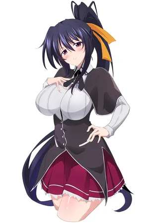
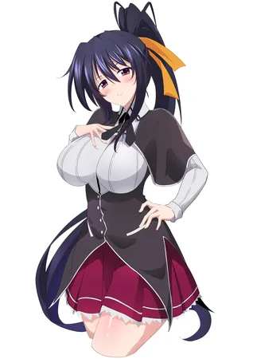
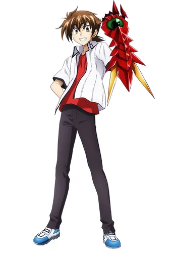
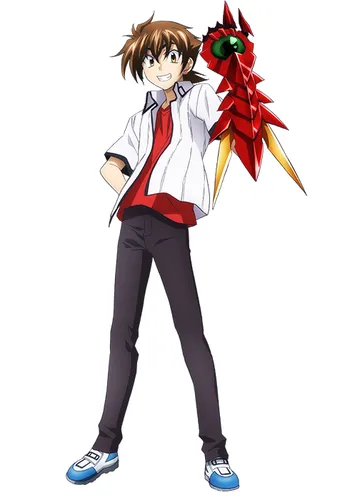
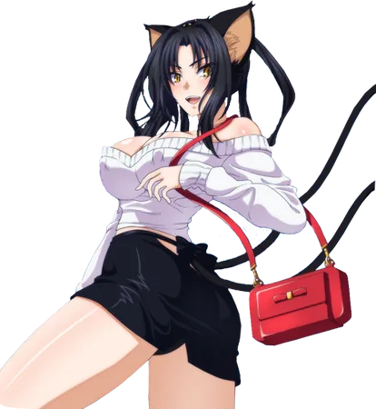
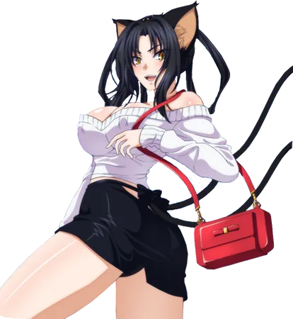
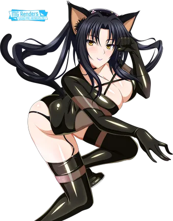
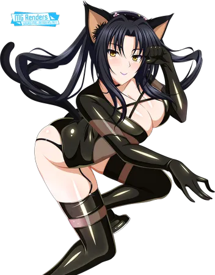

×
Sirzechs Lucyfer, dawniej Sirzechs Gremory, to starszy brat Rias Gremory; znany jako Szkarłatny Maou. Jest przywódcą Piekielnej Czwórki, władając Zaświatami z tytułem „Lucyfera”. Mąż Grayfii Lucyferiusz, z którą ma syna, Milikasa Gremory.
Sirzechs pierwotnie miał być kolejną głową rodu Gremory. Jest również przyjacielem z dzieciństwa i jednocześnie rywalem Ajuki Belzebuba – równie silnego diabła. W przeszłości doszło do poważnej kłótni pomiędzy frakcją Maou, która chciała dalszej wojny z aniołami i upadłymi aniołami, i frakcją Antymaou, do której należał Sirzechs, który wraz z Ajuką przodowali w niej i byli nawet nazywani bohaterami. Konsekwencją sprzeczki była ucieczka frakcji Maou do czeluści Zaświatów i powstanie nowego społeczeństwa diabłów, które funkcjonuje po dziś dzień. Mniej więcej w tamtym czasie Sirzechs spotkał również Grayfię, w której się zakochał. Gdy konflikt między dwoma frakcjami został zażegnany, kochankowie wzięli ślub.
Sirzechs ma ponad dwieście lat – w drugiej połowie XIX wieku wskrzesił Souji'ego Okitę jako swojego Skoczka.


 



 



 


 
